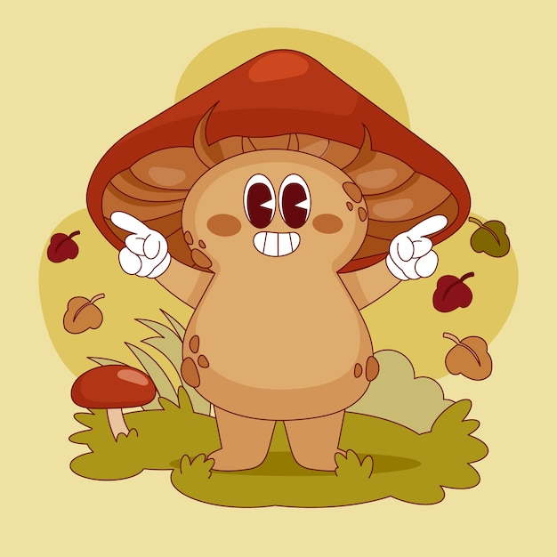

KIM JESTEŚMY?
Grzybaza powstała z inicjatywy miłośników grzybobrania z całej Polski! Zebraliśmy się, aby wspólnie móc dostarczyć wszystkim zainteresowanym niezbędnych informacji, dzięki którym w lesie będziecie czuć się lepiej niż przed własnym telewizorem!!

DLACZEGO DZIAŁAMY?
Naszym głównym celem jest zachęcenie jak największej ilości osób do tego przecudownego hobby jakim jest GRZYBOBRANIE!!!
Przy tym chcemy, aby na naszej stronie znajdowały się tylko sprawdzone informacje, które pozwolą czytelnikom dowiedzieć się, jak poprawnie należy zachowywać się w lesie, aby nie wystraszyć zarówno zwierząt, jak i grzybów!

CO ZNAJDZIESZ NA NASZEJ STRONIE?
Cztery sekcje: